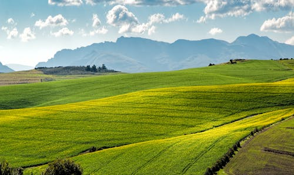

Green Agriculture - Student 1
Green agriculture promotes eco-friendly farming using composting, crop rotation, and less chemical use to preserve biodiversity, enrich soil, and ensure sustainable food production.

Endangered Species - Student 2
Each endangered species plays a unique role. Their extinction disrupts ecosystems. Learn how conservation protects icons like Amur Leopards and Asian Elephants from vanishing forever.

Forest Restoration - Student 3
Forest loss not only threatens biodiversity but also affects climate regulation and water cycles globally. Restoring forests can stabilize climates, improve rainfall, and protect endangered species.

Urban Sustainability - Student 4
Urban sustainability creates eco-friendly cities with green roofs, smart transit, clean energy, and inclusive spaces, improving quality of life while reducing environmental impact.